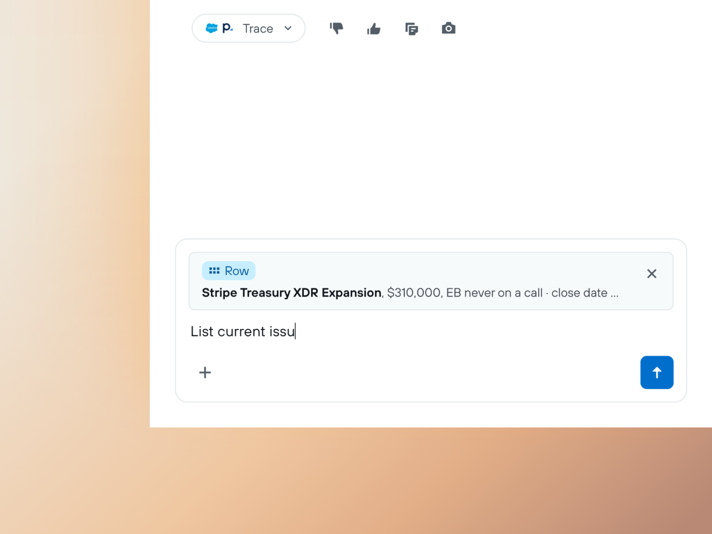
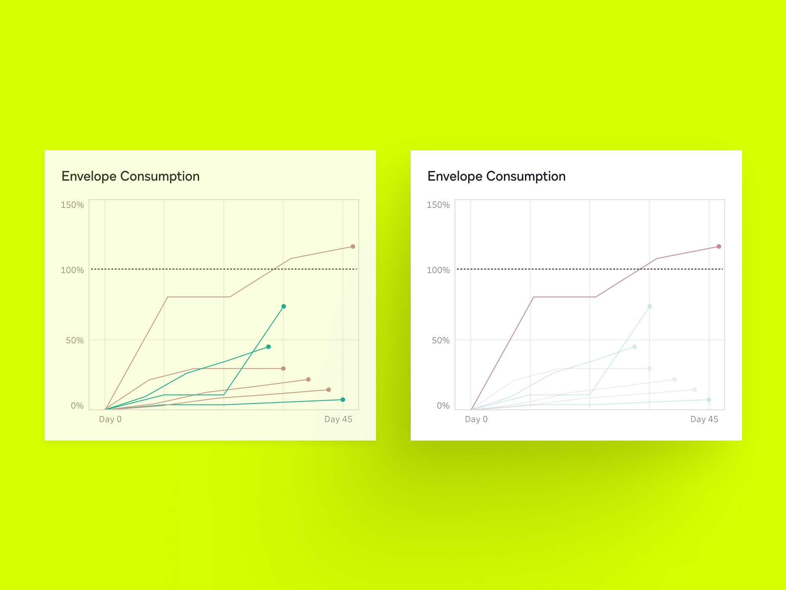
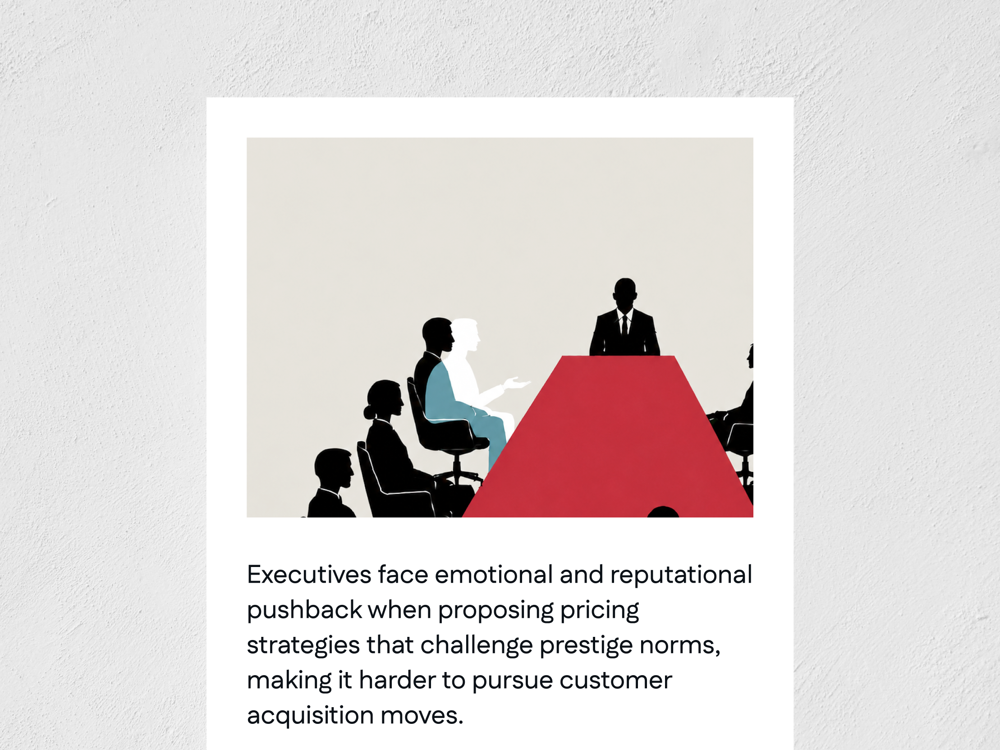
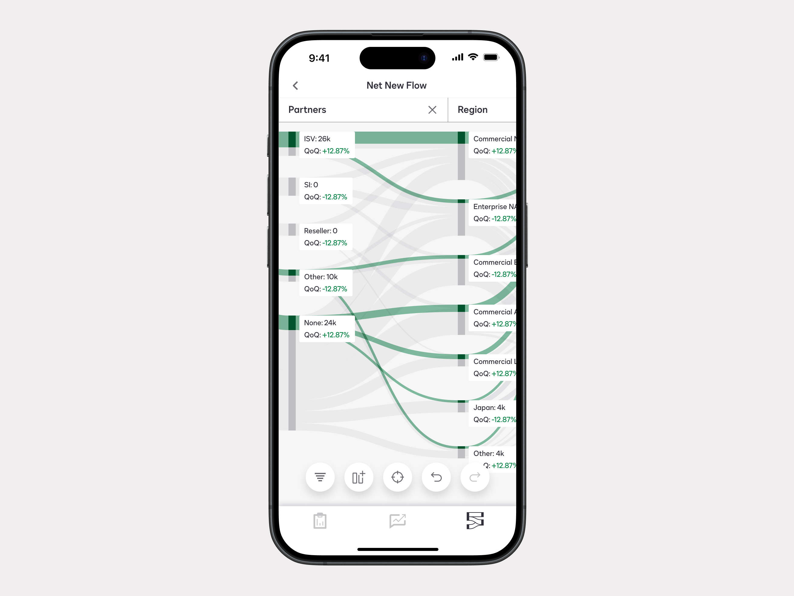

01
Palo Alto Networks

Leading a platform consolidation + introducing AI to tools for spreadsheet native users.
2025-26




I’m a 0 to 1 Product Designer living in the San Francisco Bay Area.
Over the past 8 years, I’ve worked with teams at Palo Alto Networks, Harvard Business School, DocuSign, Hitachi Energy, and Cisco.